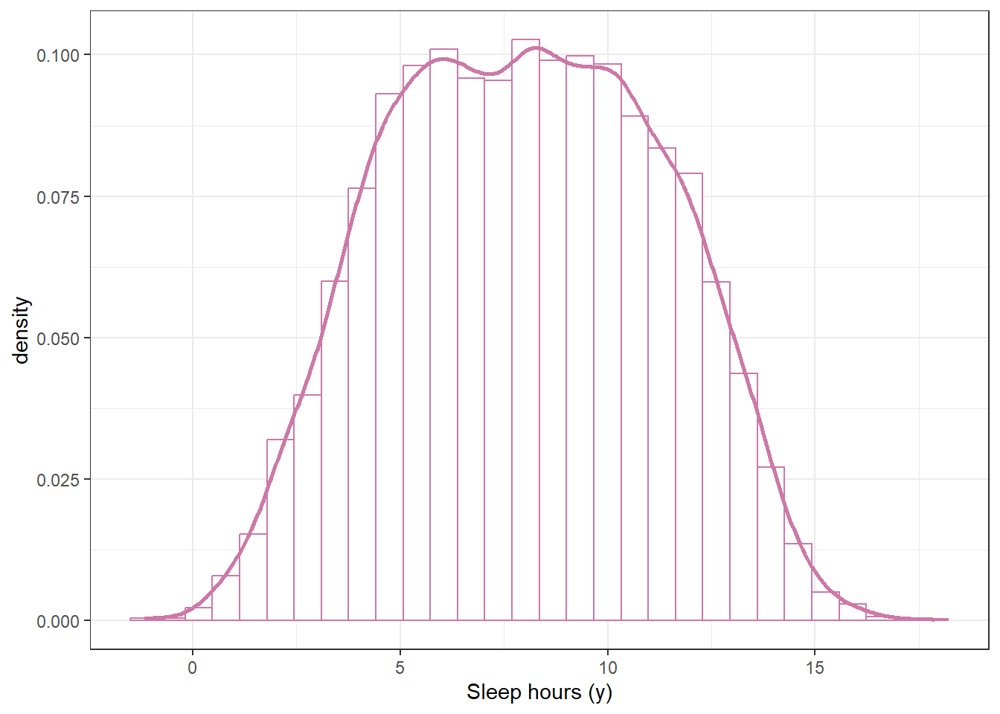
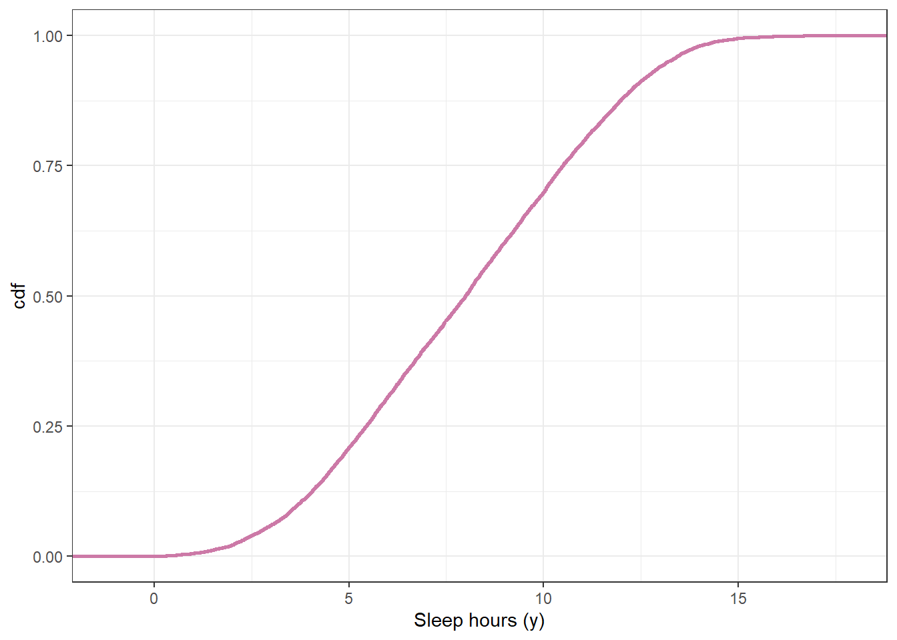
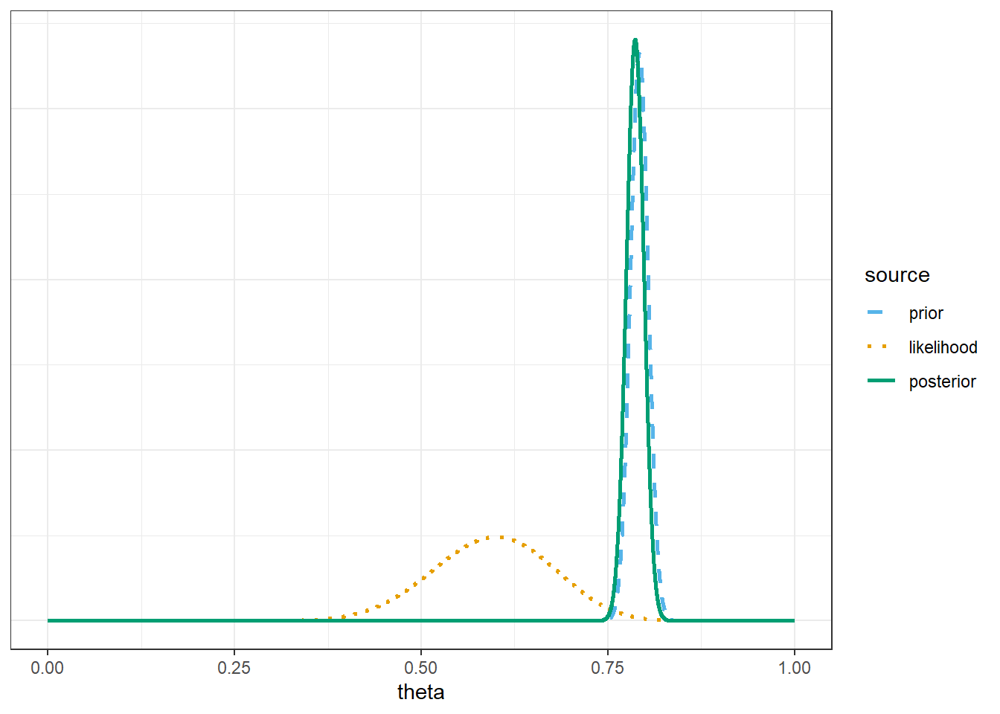
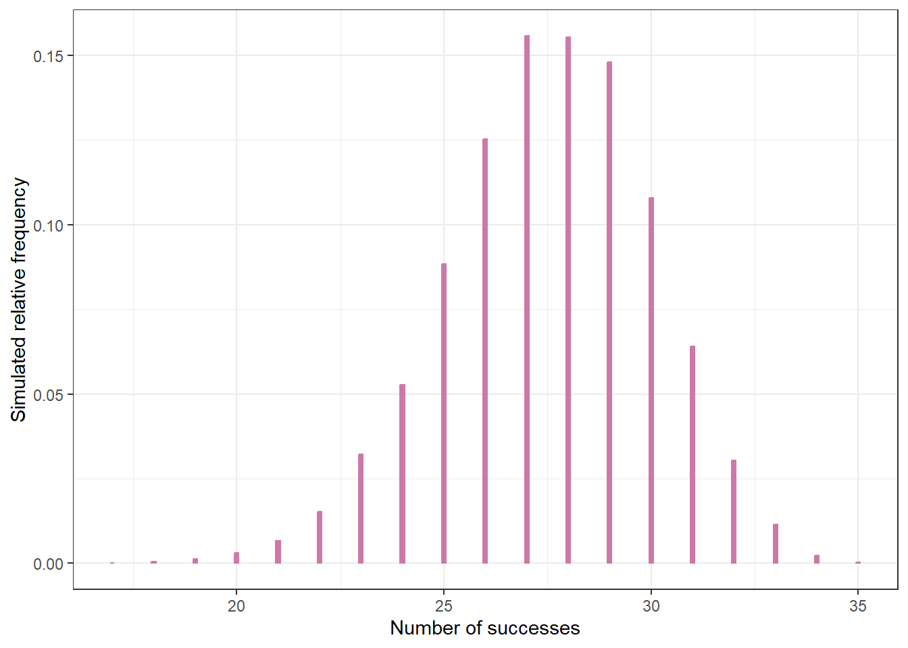
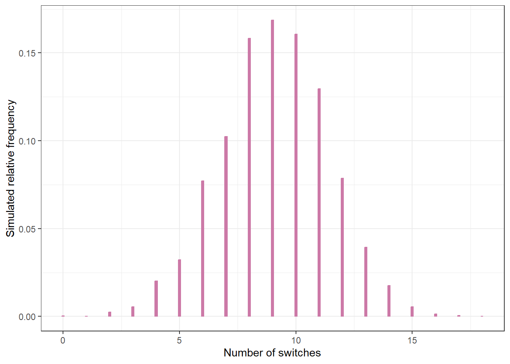

sum(y_sim > 10) / n_rep[1] 0.3009sum(y_sim < 5) / n_rep[1] 0.2086Example 11.1 Suppose we’re interested in studying hours of sleep on a typical weeknight for Cal Poly students.
What percent of students do you think sleep more than 10 hours on a typical weeknight? Less than 5 hours?
Suppose we want to perform a Bayesian analysis to estimate \(\theta\), the population mean hours of sleep on a typical weeknight for Cal Poly students. Assume that sleep hours for individual students follow a Normal distribution with unknown mean \(\theta\) and known standard deviation \(\sigma=\) 1.5 hours. (Known population SD is an unrealistic assumption that we use for simplicity here.) Suppose we want to “let the data speak for itself” so we choose a flat, Uniform prior1. Our Uniform prior needs an upper and lower bound. We remember that we shouldn’t assign 0 prior probability to possible values, no matter how implausible, so we pick a fairly wide range of possible values for \(\theta\), namely Uniform on [3, 13]. Use simulation to approximate the prior predictive distribution of sleep hours according to our model.
According to this model, (approximately) what percent of students sleep more than 10 hours on a typical weeknight? Less than 5? Do these values seem reasonable? If not, what should we do?
Example 11.2 Recall Example 10.1 which concerned \(\theta\), the population proportion of students in Cal Poly statistics classes who prefer to consider data as a singular noun (as in “the data is”). Suppose that before collecting data for our sample of Cal Poly students, we had based our prior distribution off the FiveThirtyEight data. In particular, suppose we assume a Normal prior distribution for \(\theta\) with prior mean 0.792 and prior SD 0.012.
What does this our prior distribution say about our beliefs about \(\theta\)?
Now suppose we randomly select a sample of 35 Cal Poly students and 21 students prefer data as singular. Find the posterior distribution, and plot prior, likelihood, and posterior. Have our beliefs about \(\theta\) changed? Why?
Use simulation to find the posterior predictive distribution corresponding to samples of size 35. Compare the observed sample value of 21/35 with the posterior predictive distribution. What do you notice? Does this indicate problems with the model?
Example 11.3 A basketball player will attempt a sequence of 20 free throws. Our model assumes
Suppose the player misses her first 10 attempts and makes her second 10 attempts. Does this data seem consistent with the model?
Explain how you could use posterior predictive checking to check the fit of the model.
n_rep = 10000
# simulate theta from prior
theta_sim = runif(n_rep, 3, 13)
# given theta, simulation y from model for data
sigma = 1.5
y_sim = rnorm(n_rep, theta_sim, sigma)
# plot the simulated y values
ggplot(data.frame(y_sim),
aes(x = y_sim)) +
geom_histogram(aes(y = after_stat(density)),
col = bayes_col["prior_predict"],
fill = "white") +
geom_density(col = bayes_col["prior_predict"],
linewidth = 1) +
labs(x = "Sleep hours (y)") +
theme_bw()
# plot the cdf
ggplot(data.frame(y_sim),
aes(x = y_sim)) +
stat_ecdf(col = bayes_col["prior_predict"],
linewidth = 1) +
labs(x = "Sleep hours (y)",
y = "cdf") +
theme_bw()

sum(y_sim > 10) / n_rep[1] 0.3009sum(y_sim < 5) / n_rep[1] 0.2086# possible values of theta
theta = seq(0, 1, 0.0001)
# prior
prior = dnorm(theta, 0.792, 0.012)
prior = prior / sum(prior)
# observed data
n = 35
y_obs = 21
# likelihood of observed data for each theta
likelihood = dbinom(y_obs, n, theta)
# posterior is proportional to product of prior and likelihood
product = prior * likelihood
posterior = product / sum(product)
bayes_table = data.frame(theta,
prior,
likelihood,
product,
posterior)
bayes_table |>
# scale likelihood for plotting only
mutate(likelihood = likelihood / sum(likelihood)) |>
select(theta, prior, likelihood, posterior) |>
pivot_longer(!theta,
names_to = "source",
values_to = "probability") |>
mutate(source = fct_relevel(source, "prior", "likelihood", "posterior")) |>
ggplot(aes(x = theta,
y = probability,
col = source)) +
geom_line(aes(linetype = source), linewidth = 1) +
scale_color_manual(values = bayes_col) +
scale_linetype_manual(values = bayes_lty) +
theme_bw() +
# remove y-axis labels
theme(axis.title.y = element_blank(),
axis.text.y = element_blank(),
axis.ticks.y = element_blank())
n = 35
n_rep = 10000
# Predictive simulation
theta_sim = sample(theta, n_rep, replace = TRUE, prob = posterior)
y_sim = rbinom(n_rep, n, theta_sim)
ggplot(data.frame(y_sim),
aes(x = y_sim)) +
geom_bar(aes(y = after_stat(prop)),
col = bayes_col["posterior_predict"],
fill = bayes_col["posterior_predict"],
width = 0.1) +
labs(x = "Number of successes",
y = "Simulated relative frequency") +
theme_bw()
theta = seq(0, 1, 0.0001)
# prior
prior = rep(1, length(theta))
prior = prior / sum(prior)
# data
n = 20 # sample size
y = 10 # sample count of success
# likelihood, assuming binomial
likelihood = dbinom(y, n, theta) # function of theta
# posterior
product = likelihood * prior
posterior = product / sum(product)# predictive simulation
n_rep = 10000
switches_sim = rep(NA, n_rep)
for (r in 1:n_rep){
# simulate a value of theta from its posterior
theta_sim = sample(theta, 1, replace = TRUE, prob = posterior)
# simulate n independent 1/0 trials with probaility theta
trials_sim = rbinom(n, 1, theta_sim)
# compute the number of switches using built in r function "rle"
switches_sim[r] = length(rle(trials_sim)$lengths) - 1
}
ggplot(data.frame(switches_sim),
aes(x = switches_sim)) +
geom_bar(aes(y = after_stat(prop)),
col = bayes_col["posterior_predict"],
fill = bayes_col["posterior_predict"],
width = 0.1) +
labs(x = "Number of switches",
y = "Simulated relative frequency") +
theme_bw()
We’ll discuss some problems with this approach later.↩︎